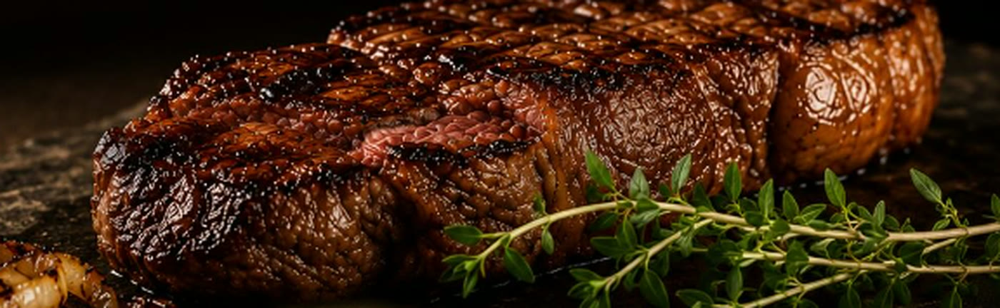
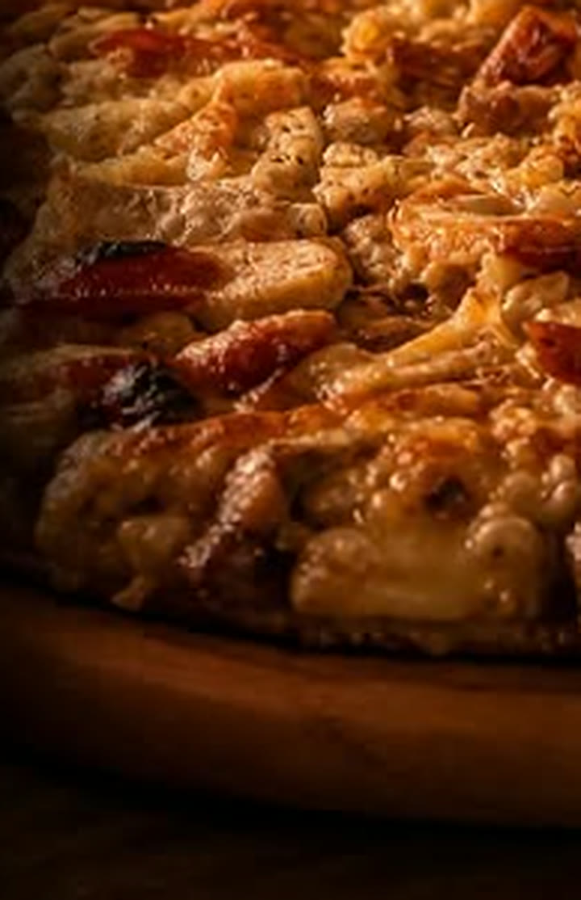
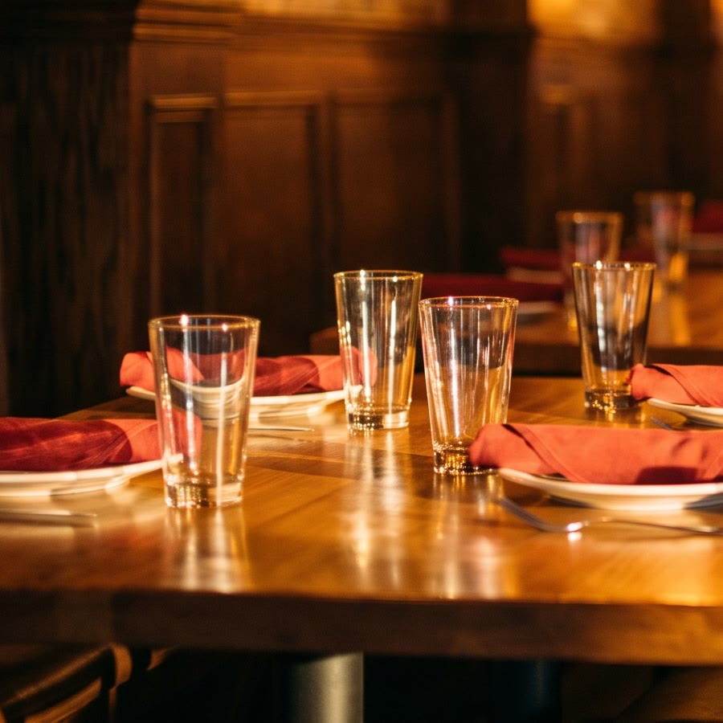
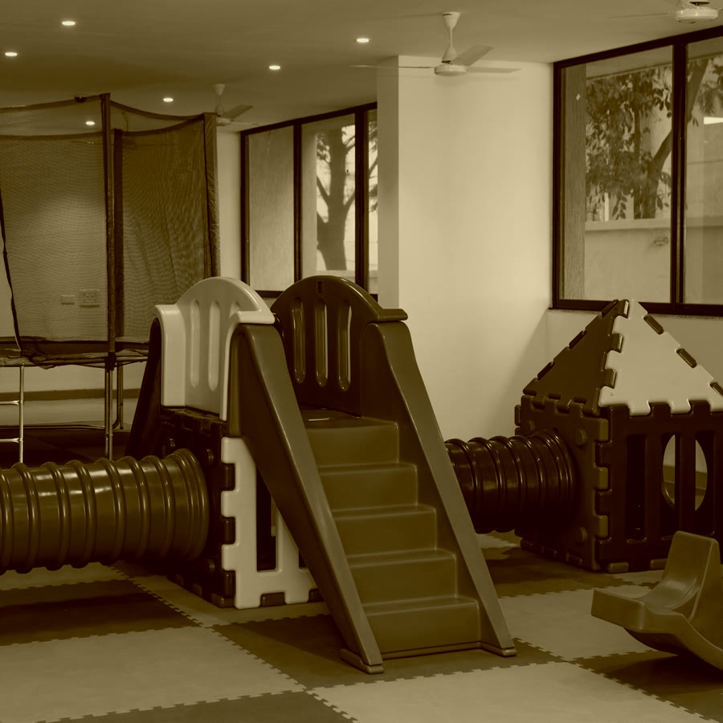

Dois rodízios diferentes, um em cada andar. Escolha antes de reservar,
porque o preço e o cardápio mudam.
1º piso
Rodízio Tradicional
O bufê você se serve. A pizza vem até a sua mesa.
R$ 49,99Promoção de terça a quinta
Terça a quinta
54,99dinheiro
59,99cartão
Sexta e domingo
59,99dinheiro
64,99cartão
Sábado
64,99dinheiro
69,99cartão
Pizza servida na mesa, sem pedir
Bufê quente e frio, você se serve
R$ 49,99 na promoção: reserva com 7 dias de antecedência e pagamento no ato, de terça a quinta, fora feriados e vésperas
Refrigerante e refresco cortesia de terça a sexta, para quem reserva
Feriado e véspera de feriado pagam o valor de sexta e domingo
Até 2 anos grátis · 3 a 5 anos R$ 19,99 · 6 a 8 anos R$ 34,99
Bariátricos têm 30% de desconto

2º piso
Rodízio Fusion Food
Outra experiência: churrasco na brasa, comida oriental e massas.
R$ 69,99Terça a quinta, em dinheiro
Terça a quinta
69,99dinheiro
74,99cartão
Sexta a domingo
79,99dinheiro
84,99cartão
Churrasco na brasa, comida oriental e pizza
Bufê de massas, petiscos e sobremesas especiais
Feriado e véspera de feriado pagam o valor de sexta a domingo
Até 2 anos grátis · 3 a 5 anos R$ 24,99 · 6 a 8 anos R$ 34,99
Bariátricos têm 30% de desconto
Bebidas à parte, sem refil
Rodízio de pizzaBufê à vontadeChurrascoAçaíBolichePlayKids15 anosCasamentoAniversárioRodízio de pizzaBufê à vontadeChurrascoAçaíBolichePlayKids15 anosCasamentoAniversário
Rodízio de pizza, bufê à vontade, churrasco, açaí, boliche, PlayKids,
15 anos, casamento e aniversário.
O que entra
Rodízio é rodízio. Sem pegadinha na conta.
Nos dois pisos
Pizzas salgadasà vontade
Pizzas docesà vontade
Pizzas premium no 2º pisoFusion Food
1º piso · Rodízio Tradicional
Arroz, feijão, batata frita, baião de dois e caldosà vontade
Macarrão, lasanha e panquecaà vontade
Saladas variadasà vontade
Salgadinhos, dadinho de tapioca e frango a passarinhoà vontade
Yakisobaà vontade
Sobremesa, açaí e sorvetetodo dia
Churrasco misto, hamburguinho, hot roll cru e risoto de camarãosáb. e dom.
2º piso · Rodízio Fusion Food
Churrasco na brasa: carne, porco, frango, linguiça e coraçãoà vontade
Rodada especial: pastel, risoto de camarão e hamburguinhoà vontade
Oriental: hot roll frito, hot roll cru e yakisobaà vontade
Massas, saladas, petiscos e costelinhaà vontade
Sobremesas especiais, açaí e sorveteà vontade
Cortesia só para quem reserva
Refrigerante e refresco no 1º piso, de terça a sextacortesia
Refrigerante 2 litros com reserva, nos outros dias e no 2º pisoR$ 15
Refrigerante 2 litros sem reservaR$ 20
Drinks e demais bebidasà parte
Cardápio sujeito a alteração sem aviso prévio.
Não é só comer
A pista e a mesa no mesmo lugar.
A espera da mesa deixa de ser espera. E quem chega com criança
pequena não precisa escolher entre jantar e ficar de olho.
BolichePista por hora, até 6 pessoas. Quem vai no rodízio joga a partir de R$ 40.
PlayKidsGrátis para a criança que paga o rodízio infantil. Fliperama à parte.
Dois andaresRodízio embaixo, churrasco em cima, boliche junto.
Festas e eventos
Sua festa cabe aqui.
Quinze anos, casamento, aniversário, confraternização de fim de ano.
A casa inteira ou um andar só, com pista de boliche e cozinha própria.
Segure para lançar
01
15 anos
Salão, pista de boliche e cozinha da casa para a festa inteira.
02
Casamento
Recepção com bufê próprio, sem fornecedor de fora para a comida.
03
Aniversário
Aniversariante com 50% no rodízio, ou grátis com 10 pagantes no dia.
04
Confraternização
Empresa ou turma grande, com andar reservado.
Cada festa tem orçamento próprio. O pedido pela reserva já chega
com data, número de pessoas e ocasião.
A casa
Duque de Caxias, terça a domingo.
O salãoO bufê

A pizza da casaChurrasco na brasa, 2º piso

A mesaO boliche

PlayKids
Bufê, pizza, churrasco, boliche e PlayKids são fotos reais da casa.
Reserva
Reserve em poucos toques.
Escolha o andar, o dia e quantas pessoas vão. Dá pra somar pista de boliche
e kit festa, usar o desconto de aniversário e ver o total antes de confirmar.